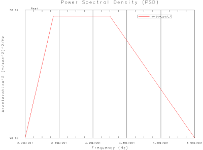

Plot the PSD function
Use the NX Functions and Graphing tools to plot the PSD function.
 XY Function Navigator
XY Function Navigator
-
Under NX AFU Files – XY Tabular Functions→Associated AFU, expand the
 node that represents the AFU file where you saved the PSD function in the previous step.
node that represents the AFU file where you saved the PSD function in the previous step.
-

 random_psd_1
random_psd_1 -
 Plot (XY)
Plot (XY)
 Return to Model (Layout Manager toolbar)
Return to Model (Layout Manager toolbar)